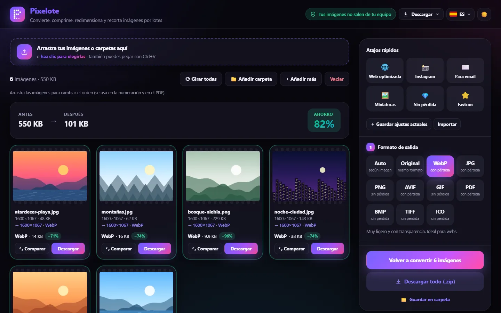
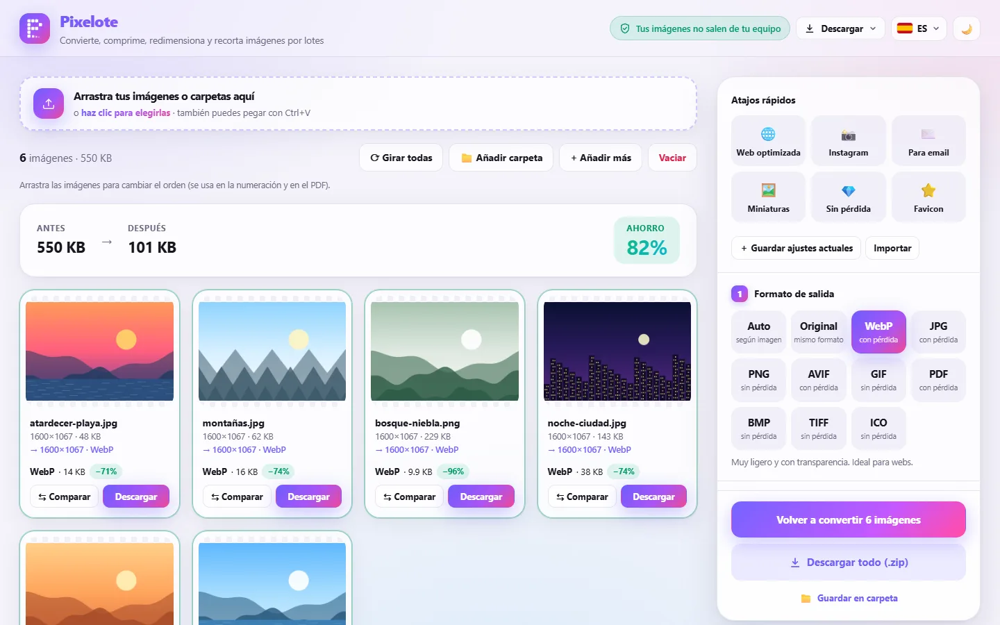
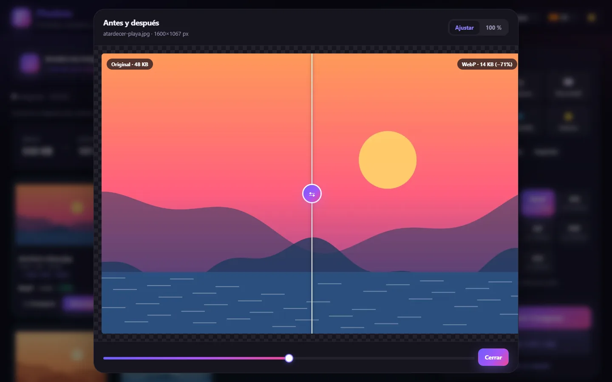
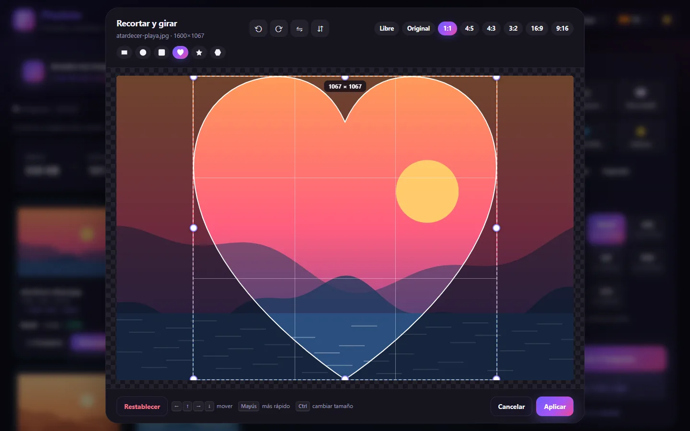
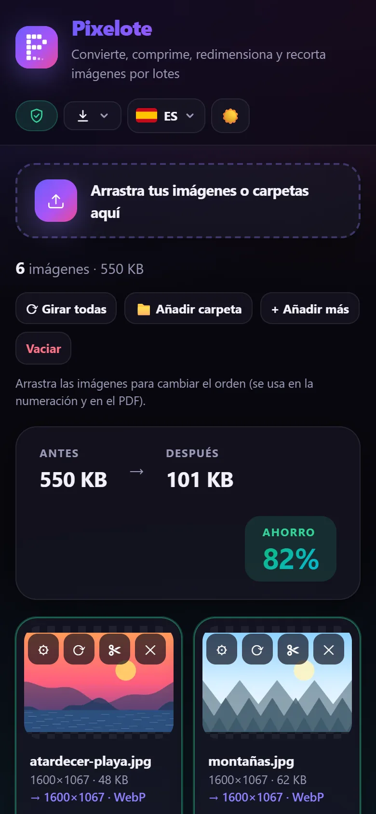

Convertir formatos
De HEIC a JPG, de PNG a WebP, de cualquier imagen a PDF… o deja que el modo Auto elija el mejor formato para cada foto.
GratisSin registroSin subir nada
Pixelote cambia el formato, comprime, redimensiona y recorta decenas de fotos a la vez, directamente en tu navegador. HEIC, WebP, AVIF, PNG, JPG, PDF y muchos más.


La mayoría de conversores online suben tus imágenes a un servidor. Pixelote no: todo el trabajo lo hace tu propio navegador, así que nadie más puede verlas. Ni siquiera nosotros.
Una sola herramienta para convertir, comprimir y preparar tus fotos para la web, las redes o el correo.
De HEIC a JPG, de PNG a WebP, de cualquier imagen a PDF… o deja que el modo Auto elija el mejor formato para cada foto.
Ajusta la calidad o fija un peso máximo en KB. Con MozJPEG y PNG optimizado, tus fotos pesan mucho menos.
Por porcentaje, a un ancho máximo o a medidas exactas. Genera varios tamaños de una vez para tu web.
Proporciones como 1:1 o 16:9 y formas redondas, de corazón o de estrella, con ajuste fino desde el teclado.
Arrastra decenas de fotos o carpetas enteras. Se procesan a la vez y las descargas todas juntas en un .zip.
Compara el original con el resultado con un deslizador, antes de descargar nada.
Añade tu texto o tu logo, en la posición, el tamaño y la opacidad que quieras. Solo si tú quieres.
Web, Instagram, email, miniaturas, favicon… o guarda tus propios ajustes y compártelos con un enlace.
Cada imagen muestra su peso antes y después, y el comparador te deja deslizar entre el original y el resultado para comprobar que la calidad sigue intacta.

Elige la zona exacta, gira, voltea y dale forma: redonda, de corazón, de estrella o con esquinas redondeadas. Lo que queda fuera sale transparente.

Sin instalar nada y sin crear ninguna cuenta.
Suelta fotos o carpetas enteras, elígelas desde tu equipo o pégalas con Ctrl+V.
Pulsa un atajo o ajusta la calidad, el tamaño y el recorte a tu gusto.
Pulsa Convertir y descarga cada imagen o todas juntas en un .zip.
Abre las fotos de tu móvil o de tu cámara y guárdalas en el formato que necesites.
HEIC son las fotos del iPhone. RAW incluye DNG, CR2, CR3, NEF, ARW, ORF, RW2, RAF y más.
O en modo Auto, que elige el formato según sea una foto, un gráfico o tenga transparencia.
En el ordenador o en el móvil, con internet o sin él.
Ábrela y empieza. Funciona en Chrome, Edge, Firefox y Safari, también en el móvil.
Abrir la appDesde el botón Descargar de la app, instálala con su propio icono y úsala sin conexión.
Instalar desde la appUn programa ligero, de unos 3,5 MB, para Windows 10 y 11. Avisa solo cuando hay una versión nueva.
Descargar para Windows
Sí. Es totalmente gratis, sin anuncios, sin registro y sin marcas de agua.
No. Todo el trabajo lo hace tu propio navegador: las imágenes nunca salen de tu equipo, así que nadie más puede verlas.
Abre Pixelote, arrastra tus fotos HEIC, elige JPG como formato de salida y pulsa Convertir. Después puedes descargarlas una a una o todas juntas en un .zip.
Sí. Si la instalas como app o usas la versión para Windows, funciona sin internet. La única excepción es HEIC, que necesita conexión para cargar su decodificador.
No hay un límite fijo. Puedes convertir decenas o cientos de imágenes a la vez; el único límite es la memoria de tu equipo.
Sí. Funciona en cualquier navegador moderno: Chrome, Edge, Firefox y Safari, en el ordenador y en el móvil. En Windows también puedes instalarla como programa.
Tú decides. Con PNG, TIFF o BMP no se pierde nada. Con WebP, JPG o AVIF eliges la calidad, y el comparador antes/después te deja ver la diferencia antes de descargar.
Sí. Por defecto, Pixelote elimina los datos EXIF, incluida la ubicación. Si los necesitas, puedes conservarlos en las opciones avanzadas.
Es gratis, es rápido y tus fotos se quedan contigo.
Abrir Pixelote